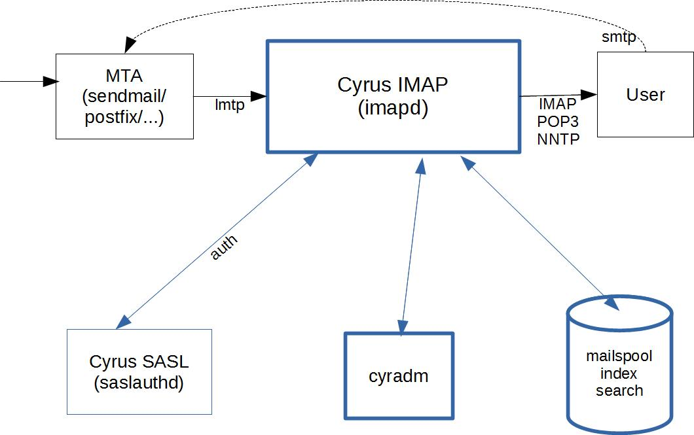
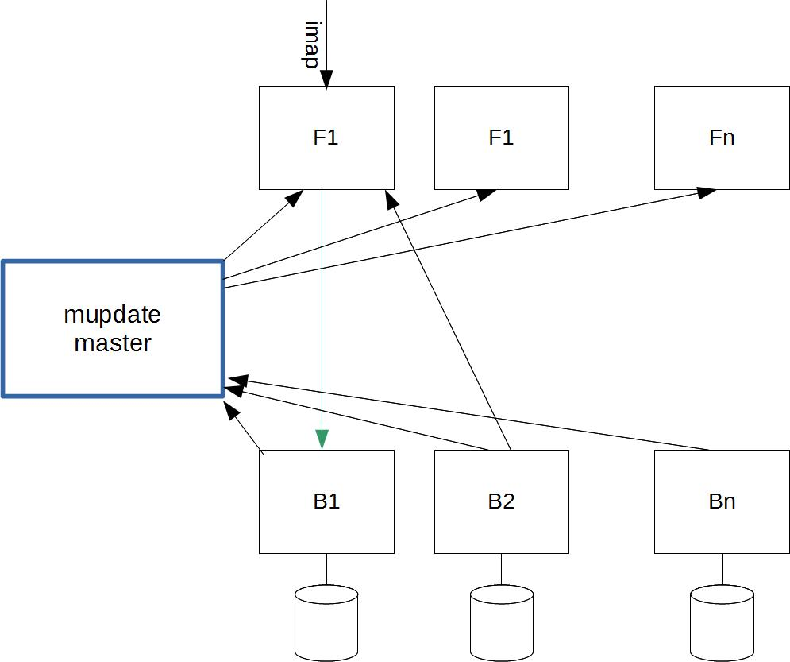
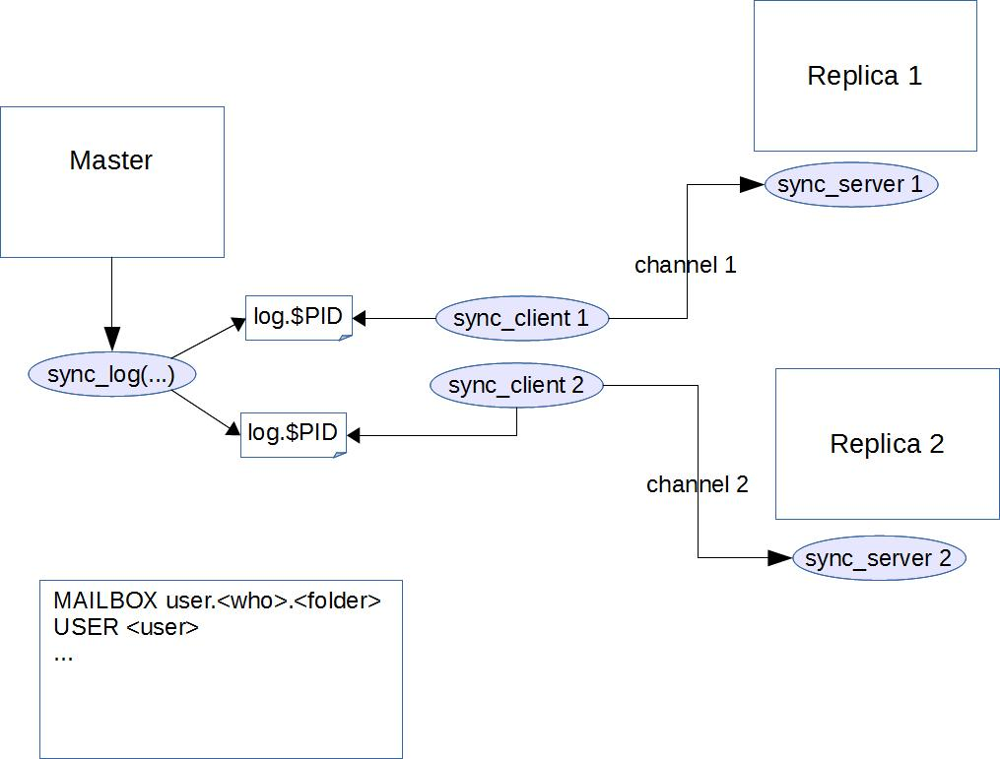

System Architecture
High Level Architecture
A birds-eye view of Cyrus.
{kind=link}
Mail is delivered over smtp to the MTA (Message/Mail Transfer Agent). This then is delivered to Cyrus imapd over lmtp (Local Mail Transfer Protocol).
Cyrus processes the inbound message and makes it available to the user over POP3, IMAP or even NNTP. Cyrus does not provide outbound SMTP services: these are hooked back into the MTA.
Cyrus usually uses saslauthd (Cyrus SASL) to provide authentication services. It is not the only way to provide authentication, but it is the usual option.
Cyrus stores the mailspool, indexes and search data on disk. While these are inherently files, their structure and function is database-centric and should be treated as such. (Do not attempt to manually edit these files. That way lies madness.) Cyrus itself provides no inherent backup capacity: this must be configured externally using tools best suited for your environment.
For administrative actions on your server - such as creating users, editing mailbox details, etc - use cyradm(8). This is a command, not a daemon, and it communicates with cyrus imapd via the IMAP protocol, and authenticating as an admin user.
For security between the user and cyrus, usually SSL is applied.
Cyrus Murder
Cyrus Murder, or IMAP Aggregation, provides the ability to split a common IMAP mailbox namespace(s) across multiple backends. Cyrus murder is not replication; it is load and resource sharing for performance.
{kind=link}
Consider a set of frontends (F1..Fn) which contain no user data. They are essentially stateless. Users access mailboxes from any frontend. Frontends are IMAP/POP3/Sieve/LMTP proxies.
There is also a set of backends (B1..Bn) which manage user data stores. Unlike the frontends, each backends is unique: each holds a subset of data. Backends are IMAP/POP3/Sieve/LMTP servers.
So when a user logs in to a frontend (say F1), how does F1 know from which backend to fetch the user’s data? This is where mupdate comes in: the mupdate master holds the mapping of mailboxes to back ends. Any time a backend has a change to their user data (i.e. mailbox add/delete/move/subscribe), it sends the change to the mupdate master which then notifies all the frontends of the latest mapping.
A user’s data is not necessarily all stored on a single backend, either: it can be split across disk partitions or backends.
The mapping on mupdate goes something like this:
<user>.<folder> |
<backend>!<disk partition> |
|---|---|
u1 |
b2!default |
u2 |
b2!default |
u2.Trash |
b1!data |
u3 |
b1!bigdisk |
Mupdate is multithreaded.
Should each datastore be configured to contain the complete set of all data, and any frontend can also behave as a backend (and vice versa), this is known as Unified Murder: where everything has everything.
See the Cyrus Murder installation and admin guide for more information.
Replication
Replication is not Aggregation or Cyrus Murder. Replication provides high availability and hot backups. It is designed to replicate the mailstore on a standalone Cyrus install, or multiple backend servers in a murder configuration. It does not replicate mupdate master servers: frontends have no state to replicate.
{kind=link}
A replication master is configured with a number of channels: each channel defines the set of replicas the master is replicating to, and the configuration (credentials on the replica host, port and hostname) for how to communicate to that replica.
Each channel (ie: each replica) has its own set of log files on the master, and its own sync_client instance which processes those log files and sends them to the replica’s sync_server.
When a replication master generates a change, it calls sync_log. This writes the change to all the log files (one per channel). The log files are rotated every few seconds. The $PID on the log file set is that of the particular sync_client who processed the change.
Replication is idempotent: you can safely run the same log multiple times.
See the Replication installation and admin guide for more information.
Channels
A channel is a way of describing the linkage between a replication master and one of its replicas. It encompasses the configuration on the master to know which sync logs to write to, and the configuration on the master to know the imap credentials on the replica to allow it to send details to the replica. It is the port configuration on the replica to know where to listen for change updates.
There’s two standard channel configurations:
Single master keeping all replicas up to date.
Single master updates the replicas via chaining. (master updates replica 1, which updates replica 2)
The only real benefit to chaining is bandwidth use reduction - if
you have two replicas in a different data centre, you can chain them and
avoid sending all the data over the link twice. You can always re-
establish replication to the second replica by creating a direct channel
and running sync_client -A to make sure everything is up-to-date.
Log file
The log file is a list of users and/or mailboxes which have been altered. When sync_log is enabled, all of the daemons which might alter a mailbox or user will write a line to this log each time they do so. That means the obvious suspects – imapd, pop3d, timsieved, lmtpd, etc. – but also cyr_expire and friends.
So when sync_client processes a sync_log, it needs to look at an actual copy of the user/mailbox in order to determine its current state, and needs to look at both copies to work out what to replicate between them. It uses sync_send_lookup to ask for the current state of an item, and sync_response_parse to process the response to then make suitable changes to perform the synchronisation.
Sync client supports doing a single user with ‘-u’, a single mailbox
with ‘-m’, etc. All the entries in the sync_log file are triggers to
replicate with that same value, so a line USER vader@darth.net is
the same as running sync_client -u vader@darth.net.
Invoking Cyrus
Cyrus has two primary configuration files which control its operation:
/etc/imapd.conf
/etc/cyrus.conf
imapd.conf
Cyrus is invoked via imapd -C path/to/imapd.conf.
The format of imapd.conf(5) is in key: value pairs.
cyrus.conf
This is the config file for the Cyrus master process. The format of cyrus.conf(5) defines
START: What processes to begin once at startup,
SERVICES: Which daemons to spawn
EVENTS: What processes to periodically invoke, similar to cron.